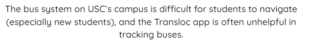
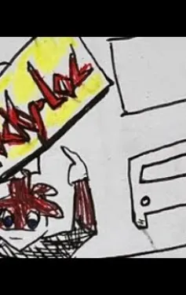

Problem statement: Bus Problem
The bus system on USC's campus is too difficult for students to navigate (especially new students), and the transloc app is often unhelpful in tracking buses.

Affinity diagram: [Bus-ted]
This affinity diagram describes all the problems students currently have with the transloc app, and some ideas on how it could be improved.

Team Personas: Bus-ted personas
These are profiles of some of the students who have trouble with the transloc app.

Team Storyboards: Bus-ted Storyboards
My storyboard depicts a student who got cinfused by the routes on the transloc app and ended up going to the zoo instead of his class.

Team Sketches:
These are some concept sketches of how the app might work.

Team Paper Prototype:
This video shows our paper prototype, which is a few sticky notes that show how our app will work

Team Hi-Fi Prototype:
This video is a more accurate showcase of what our app would look like. Just like the paper prototype, it goes over things like the settings, on demand, trip planning, and the schedule.